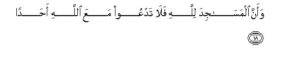

بسم الله الرحمن الرحيم
Sayyid Abul Ala Maududi - Tafhim al-Qur'an - The Meaning of the Qur'an
 72.
Surah Al Jinn (The Jinn)
72.
Surah Al Jinn (The Jinn)
"Al-Jinn" is the name of this Surah as well as the title of its subject matter, for in it the event of the Jinn's hearing the Qur'an and returning to their people to preach Islam to them, has been related in detail.
According to a tradition related in Bukhari and Muslim, on the authority of Hadrat Abdullah bin Abbas, once the Holy Prophet (upon whom be peace) was going to Visit the Fair of Ukaz with some of his Companions, On the way be led the Fajr Prayer at Nakhlah. At that time a company of the jinn happened to pass that way. When they heard the Quran being recited, they tarried and listened to it attentively. This very event has been described in this Surah.
Most of the commentators, on the basis of this tradition, believe that this relates to the Holy Prophet's well known journey to Taif, which had taken place three years before the Hijrah in the 10th year of the Prophethood. But this is not correct for several reasons. The jinn's hearing the Qur'an during the journey to Taif has been related in Al-Ahqaf 29-32. A cursory reading of those verses shows that the jinn who had believed after hearing the Qur'an on that occasion were already believers in the Prophet Moses and the previous scriptures. On the contrary, vv. 2- 7 of this surah clearly show that the jinn who heard the Qur'an on this occasion were polytheists and deniers of the Hereafter and Prophethood. Then, it is confirmed historically that in his journey to Taif none accompanied the Holy Prophet except Hadrat Zaid bin Harithah. On the contrary, concerning this journey Ibn Abbas says that the Holy Prophet (upon whom be peace) was accompanied by some of his Companions. Furthermore, the traditions also agree that in that journey the jinn heard the Qur'an when the Holy Prophet had stopped at Nakhlah on his return journey from Taif to Makkah, and in this journey, according to the traditions of Ibn Abbas, the event of the jinn's hearing the Qur'an occurred when the Holy Prophet was going to Ukaz from Makkah. Therefore, in view of these reasons what seems to be correct is that in Surah Al-Ahqaf and Surah Al Jinn, one and the same event has not been narrated, but these were two separate events, which took place during two separate journeys.
As far as Surah Al-Ahqaf is concerned, it is agreed that the event mentioned in it occurred on the return journey from Taif in the 10th year of Prophethood. As for the question, when this second event took place, its answer is not given by the tradition of Ibn Abbas, nor any other historical tradition shows as to when the Holy Prophet had gone to the Fair of Ukaz along with some of his Companions. However, a little consideration of vv 8-10 of this surah shows that this could only be an event of the earliest stage of Prophethood. In these verses it has been stated that before the appointment of the Holy Prophet (upon whom be peace) to Divine Mission the jinn used to have one or another opportunity to eavesdrop in the heavens in order to hear news of the unseen, but after it they suddenly found that angels had been set as guards and meteorites were being shot on every side so that they could find no place of safety from where they could hear the secret news. Thereupon they had set about searching for the unusual thing that had occurred on the earth, or was going to occur, because of which the security measures had been tightened up. Probably since then many companies of the jinn must have been moving about in search of the unusual occurrence and one of them after having heard the Qur'an from the Holy Prophet (upon whom be peace) must have formed the opinion that that was the very thing for the sake of which all the gates of the heavens had been shut against the jinn.
Before one starts the study of this Surah one must clearly know what is the reality of the jinn so as to avoid any possible mental confusion. Many people of the modern times are involved in the misunderstanding that the jinn are not real, but only a figment of the ancient superstition and myths. They have not formed this opinion on the basis that they have known all the realities and truths about the universe and have thus discovered that the jinn do not exist. They cannot claim to possess any such knowledge either. But they have assumed without reason and proof that nothing exists in the universe except what they can see, whereas the sphere of human perceptions as against the vastness of this great universe is not even comparable to a drop of water as against the ocean. Here, the person who thinks that what he does not perceive, does not exist, and what exists must necessarily be perceived, in fact, provides a proof of the narrowness of his own mind. With this mode of thought, not to speak of the jinn, man cannot even accept and acknowledge any reality, which he cannot directly experience and observe, and he cannot even admit the existence of God, to say nothing of admitting any other unseen reality.
Those of the Muslims who have been influenced by modernism, but cannot deny the Qur'an either, have given strange interpretations of the clear statements of the Qur'an about the jinn, Iblis and Satan. They say that this does not refer to any hidden creation, which may have its own independent existence, but it sometimes implies man's own animal forces, which have been called Satan, and sometimes it implies savage and wild mountain tribes, and sometimes the people who used to listen to the Qur'an secretly. But the statements of the Qur'an in this regard are so clear and explicit that these interpretations bear no relevance to them whatever.
The Qur'an frequently mentions the jinn and the men in a manner as to indicate that they are two separate creations. For this, see Al Araf: 38, Hind : 119, Ha Mim As-Sajdah: 25,29, Ahqaf: 18, Adh Dhariyat: 56, and the entire surah Ar-Rahman, which bears such clear evidence as to leave no room to regard the jinn as a human species.
In Surah Al-Araf: 12, Al Hijr : 26-27 and Ar-Rahman : 14-19, it has been expressly stated that man was created out of clay and jinn out of fire.
In Surah Al Hijr: 27, it has been said that the jinn had been created before man. The same thing is testified by the story of Adam and Iblis, which has been told at seven different places in the Qur'an, and at every place it confirms that Iblis was already there at the creation of man. Moreover, in surah Al-Kahf: 50, it has been stated that Iblis belonged to the jinn.
In surah Al-Araf: 27, it has been stated in clear words that the jinn see the human beings but the human beings do not see them.
In surah Al-Hijr: 16-l8, surah As- Saaffat: 6-10 and surah Al-Mulk: 5, it has been said that although the jinn can ascend to the heavens, they cannot exceed a certain limit; if they try to ascend beyond that limit and try to hear what goes on in the heavens, they are not allowed to do so, and if they try to eavesdrop they are driven away by meteorites. By this the belief of the polytheistic Arabs that the jinn possess the knowledge of the unseen, or have access to Divine secrets, has been refuted. The same error has a]so been refuted in Saba: 14.
Al-Baqarah: 30-34 and Al- Kahf: 50 show that Allah has entrusted man with the vicegerency of the earth and the men are superior to the jinn. Although the jinn also have been given certain extraordinary powers and abilities an example of which is found in An-Naml 39, yet the animals likewise have been given some powers greater than man, but these are no argument that the animals are superior to man.
The Qur'an also explains that the jinn, like men, are a creation possessed of power and authority, and they, just like them, can choose between obedience and disobedience, faith and disbelief. This is confirmed by the story of Satan and the event of the jinn affirming the faith as found in Surahs Al-Ahqaf and Al-Jinn.
At scores of places in the Qur'an, it has also been stated that Iblis at the very creation of Adam had resolved to misguide mankind, and since then the Satanic jinn have been persistently trying to mislead man, but they do not have the power to overwhelm him and make him do something forcibly. However, they inspire him with evil suggestions, beguile him and make evil seem good to him. For this, see An-Nisa 117- 120, Al-Araf: 11-17, Ibrahim: 22, Al-Hijr: 30-42, An-Nahl 98-100, Bani Israil 61-65.
The Qur'an also tells us that in the pre Islamic ignorance the polytheistic Arabs regarded the jinn as associates of God, worshiped them and thought they were descended from God. For this, see A1-An'am: 100, Saba : 40-41, As Saffat: 158.
From these details, it becomes abundantly clear that the jinn have their own objective existence and are a concealed creation of an entirely different species from man. Because of their mysterious qualities, ignorant people have formed exaggerated notions and concepts about them and their powers, and have even worshiped them, but the Qur'an has explained the whole truth about them, which shows what they are and what they are not.
In this Surah in vv. 1-15, it has been told what was the impact of the Qur'an on the company of the jinn when they heard it and what they said to their fellow jinn when they returned to them. Allah, in this connection, has not cited their whole conversation but only those particular things which were worthy of mention. That is why the style is not that of a continuous speech but sentences have been cited so as to indicate that they said this and this. If one studies these sentences spoken by the jinn carefully, one can easily understand the real object of the narration of this event of their affirming the faith and or mentioning this conversation of theirs with their people in the Qur'an. The explanations that we have given of their statements in our Notes will be of further help in understanding this object.
After this, in vv 16-l8, the people have been admonished to the effect:"If you refrain from polytheism and follow the way of righteousness firmly, you will be blessed; otherwise if you turn away from the admonition sent down by Allah, you will meet with a severe punishment." Then, in vv. 19-23, the disbelievers of Makkah have been reproached, as if to say: When the Messenger of Allah calls you towards Allah, you surround and mob him from every side, whereas the only duty of the Messenger is to convey the messages of Allah. He does not claim to have any power to bring any gain or cause any harm to the people." Then, in vv. 24-25 the disbelievers have been warned to the effect: "Today you are trying to overpower and suppress the Messenger seeing that he is helpless and friendless, but a time will come when you will know who in actual fact is helpless and friendless. Whether that time is yet far off, or near at hand, the Messenger has no knowledge thereof, but it will come to pass in any case." In conclusion, the people have been told: The Knower of the unseen is Allah alone. The Messenger receives only that knowledge which Allah is pleased to give him. This knowledge pertains to matters connected with the performance of the duties of Prophethood and it is delivered to him in such security which does not admit of any external interference whatever.

In the name of Allah, the Compassionate, the Merciful.
[1-9] O Prophet, say: It has been revealed to me that a company of the jinn listened,1 then (returning to their folks) they said, "We have indeed heard a wonderful Qur'an2 which guides to the right way, so we have believed in it, and now we shall never associate anyone with our Lord."3 And that: "Our Lord's majesty is exalted: Ne has neither taken a wife nor a son."4 And that: "The foolish among us5 have been uttering falsehood against Allah." And that: "We thought that the men and the jinn could never utter a lie against God."6 And that: "Some people from among the men used to seek refuge with some people from among the jinn, so they caused the jinn to become even more arrogant."7 And that: "Men thought, even as you thought, that Allah would not send anyone as a Messenger."8 And that: "We searched the heavens and found it filled with guards and shooting-stars." And that: "Before this we used to find a seat in heaven for eavesdropping, but now if some one tries to eavesdrop, he finds a shooting-star lying in ambush for him."9
[10-15] And that: "We did not know whether some evil was intended for the dwellers of the earth or their Lord wanted to show them the right way."10 And that: "Some of us are righteous, while some are otherwise. We follow different ways."11 And that: "We thought that we could neither frustrate Allah in the earth nor frustrate Him by flight."12 And that: "As soon as we heard the message of guidance, we believed in it. Now whoever believes in his Lord, will have neither fear of loss nor of injustice.”13 And that: "Some of us are Muslims (submissive to Allah) and some deviators from the Truth. Those who have adopted Islam (the way of submission) have found the way to salvation, and those who have deviated from the Truth, will become fuel for Hell."14

[16-23] And15 (O Prophet, say: “it has been revealed to me:”) If the people had steadfastly pursued the right way, We would have given them abundant waters to drink16 that We might try them by that blessing.17 And he who turns away from his Lord's remembrance,18 his Lord shall punish him with a severe torment. And that the mosques are for Allah; therefore, do not call upon anyone else in them along with Allah.19 And that when the servant of Allah20 stood up to invoke Him, the people were ready to assault him. O Prophet, say; "I call upon my Lord alone, and I do not associate anyone with Him."21 Say, "I have no control over any harm or good for you." Say, "None can protect me from Allah, nor can I find any refuge apart from Him. My mission is only to convey what I receive from Him and His messages.22 Now whoever disobeys Allah and His Messenger for him awaits the fire of Hell:. Such people shall dwell in it for ever.23
[24-28] (These people shall not change their ways) until when they see that what they are being promised, they shall come to know whose helpers are weaker and whose supporters are fewer in number.24 Say, "I do not know whether that which you are being promised, is near at hand, or whether my Lord appoints a lengthy term for it.25 He alone is the Knower of the unseen. He does not reveal His secrets to anyone26 except to the Messenger whom He may choose27 (for the purpose). Then He appoints before him and behind him guards28 that He may know that they have truly delivered the messages of their Lord.29 And He encompasses all their surroundings and keeps a count of each and every thing.30
1This shows that the jinn at that time were not visible to the Holy Prophet (upon whom be peace), nor he knew that they were hearing the Qur'an being recited, but Allah informed him of the incident afterwards by Revelation. Hadrat 'Abdullah bin 'Abbas also has, in connection with this incident, stated: "The Holy Messenger of Allah had not recited the Qur'an before the jinn, nor did he see them." (Muslim, Tirmidhi, Musnad Ahmad, Ibn Jarir).
2The words in the original are: Qur an-an 'ajaba. Qur an means "something which is read again and again", and the jinn probably used this word in this very meaning, for they were introduced to this Divine Revelation for the first time, and they did not perhaps know then that what they were hearing, was the Qur'an itself. 'Ajab is a superlative, which is used in Arabic for a wonderful thing. So, what the jinn said means: "We have heard such a wonderful recital which is unique both in its language and in its subject-matter."
This also shows that the jinn not only hear what human beings say but also understand their language fully, although it is not necessary that all the jinn might know all the human languages. It is possible that those of them who live in a particular region of the earth might know the language of the people of that region. But in any case this statement of the Qur'an clearly shows that the jinn who listened to the Qur'an at that time were so conversant with the Arabic language that they not only appreciated the matchless eloquence of the Divine Word but also understood its sublime subject-matter fully well.
3This throws light on several things:
(1) That the jinn do not deny Allah's existence and His being Lord and Sustainer;
(2) that among them also there are polytheists, who like polytheistic human beings ascribe divinity to others than Allah: thus, the community of the jinn whose members heard the Qur'an was polytheistic;
(3) that the Prophethood and revelation of Divine scriptures does not exist among the jinn, but whoever of them believe, they believe in the Prophets raised among human beings and in the Books brought by them. This same thing is confirmed by Al-Ahqaf: 29-30, where it has been stated that the jinn who had then heard the Qur'an, were from among the followers of the Prophet Moses, and they after having heard the Qur'an, had invited their people to believe in the Revelation that had been sent down by God confirming the previous scriptures. Surah ArRahman also points to the same, for its whole subject-matter shows that the audience of the Holy Prophet's invitation are both the men and the jinn.
4From this we know two things;
(1) That these jinn were either from among the Christian jinn, or they were followers of a different religion in which Allah was regarded as having children and families.
(2) That at that time the Holy Prophet (upon whom be peace) was reciting some such part of the Qur'an hearing which they realized the error of their creed and knew that it was sheer ignorance and impudence to ascribe wife and children to the High and Exalted Being of Allah.
5The word safihuna as used in the Text can be spoken for an individual as well as for a group. If it is taken for a foolish individual, it would imply Iblis and if for a group, it would imply a group of foolish jinn who said such things.
6That is, "We were misled by those falsehoods because we could never think that the men or the jinn could ever dare forge a lie about Allah, but having heard this Qur'an we now know that they were, in fact, liars."
7Ibn `Abbas says that in the pre-Islamic days of ignorance when the Arabs had to spend a night in some uninhabited, desolate valley, they would shout out: "We seek refuge of the jinn, who is owner of this valley." In other traditions of the pre-Islamic ignorance also the same thing has been reported frequently. For example, if in a place they ran short of water and fodder, the wandering Bedouins would send one of their men to some other place to see if water and fodder were available; and when they reached the new site under his direction, they would shout out before they halted to pitch the camp: "We seek refuge of the sustainer of this valley so that we may live here in peace from every calamity." They believed that every un-inhabited place was under the control of one or another jinn, and if someone stayed there without seeking his refuge, the jinn would either himself trouble the settlers, or would let others trouble them. These believing jinn are referring to this very thing. They meant that when man, the vicegerent of the earth, started fearing them without any reason, and started seeking their refuge instead of God's, it caused their people to become even more arrogant, haughty and wicked, and they became even more fearless and bold in adopting error and disbelief.
8Another meaning of this sentence can be: "Allah will not resurrect anyone after death." As the wards are comprehensive they can be taken to mean that, as among human beings, so among the jinn too there were the people who denied both the Prophethood and the Hereafter. However, in view of the theme that follows, the meaning that we have given in the text above is preferable, for according to it these believing jinn tell the people of their community: "Your view is proved wrong that Allah will not appoint anyone as a Messenger. In fact, the gates of heavens have been closed on us only because Allah has already appointed a Messenger. "
9This is the reason why these jinn were now out searching as to what particularly had happened, or was going to happen, on the earth, which had necessitated strict security measures against eavesdropping so that they were driven away from wherever they tried to eavesdrop in any way.
10This shows that such extraordinary measures were adopted in the heavens only on two kinds of occasions: first, when Allah might decide to inflict the dwellers of the earth with a torment, and the Divine will might be that before it was actually inflicted the jinn might not know and convey its news to warn their friendly human beings of the impending disaster. Second, that Allah might appoint a Messenger on the earth, and strict security measures might be adopted so that neither the messages being conveyed to him be interfered with by the satans nor should they be able to know beforehand what instructions were being given to the Messenger. Thus, the saying of the jinn means: "When we noticed that strict security measures had been adopted in the heavens for the safeguard of the news, and the meteorites were being showered profusely, we wanted to know which of the two things had happened: whether Allah had caused a torment to descend suddenly on some people of the earth, or a Messenger had been raised somewhere on the earth. We were on the lookout for the same when we heard the wonderful Revelation, which guides to the Right Path, and we came to know that Allah had not sent down a torment but had raised a Messenger to show the Right Way to the people." For further explanation, see E.N.'s 8 to 12 of Al-Hijr, E.N. 7 of As Saaffat, E.N. I 1 of Al-Mulk).
11That is, "Morally also there are good and bad jinn among us, and from the viewpoint of creed as well all do not follow one and the same religion, but we are divided into different groups." With these words the believing jinn want to convince the other jinn of their community that they certainly stood in need of finding out the right way and could not dispense with this need.
12That is, "We were led by this very idea to the way of success. As we were not fearless of Allah and we believed that we would not be able to avoid His punishment if we disobeyed Him, so when we heard the Divine Revelation that had been sent to show the right way, we could not have the courage and boldness to persist in the beliefs that our foolish people had spread among us, afar we had known the truth."
13"Fear of loss": fear of being given a lesser reward than what one actually deserves for one's good deeds, and "injustice" that one may be deprived of the reward for the good deeds done but duly punished for the errors committed or punished innocent; no believer has any fear of such an injustice from Allah.
14Here, one may ask: when, according to the Qur'an, the jinn have been created from the fire, what harm can the fire of Hell do them? The answer is: Even according to the Qur'an, man has been created out of the earth; why does then man feel hurt when a clod of earth is thrown at him? The truth is that although the whole body of man has been made from the earthly substances, when a living man of flesh and blood is molded from them he becomes an entirely different thing from those substances; then other things made from the same substances become a means of causing harm to him. Likewise, although the jinn also have been created from the fire, when a living and sentient creation has been made from it, the same fire becomes a means of causing harm and hurt for it. (For further explanation, see E.N. 15 of Surah Ar-Rahman).
15The conversation of the jinn having come to an end, with this begins the speech of Allah.
16This is the same thing as has been said above in Surah Nuh: 10-11. "Seek forgiveness of Allah. .. He will send abundant rains for you from heaven. " (For explanation, see E.N. 12 of Surah Nuh). Abundance of water has been used for abundance of blessings metaphorically for human life and habitation depend on water. Without water there can be no human settlement, nor can man's basic needs be fulfilled, nor his industries work and prosper.
17"We might try them by that blessing": "We might see whether they remain grateful after having received the blessing or not, and whether they put Our blessing to right use or not."
18"To turn away from Allah's remembrance" means that one may reject the advice and admonition sent down by Allah, or one may disdain giving ear to Allah's remembrance, or one may turn away from the worship of Allah.
19The commentators generally have taken "mosques" to mean the places of worship. Accordingly, the verse means: "None should he associated in the worship of Allah in the places of worship. Hadrat Hasan Basri says: The entire earth is a place of worship, and the verse means to say: polytheism ought not to be committed anywhere on God's earth," He has reasoned out this meaning from the Holy Prophet's Hadith "For me the entire earth has been made a place of worship and a means of obtaining purity:" Hadrat Sa`id bin Jubair has interpreted masajid to imply the parts of the body on which one prostrates oneself, i.e. the hands, the knees, toes and forehead. According to this explanation, the verse means: These limbs have been made by Allah; no one should prostrate oneself on these before anyone other than Allah.
20"Servant of Allah": the Holy Prophet (upon whom be peace).
21That is, to call upon Allah is no objectionable thing, which may so provoke the people. The evil thing, however, is that one should associate another with Allah in His divinity, and this I never do; this is done by those who mob and surround me when they hear God mentioned by me.
22That is, "I do not claim to have any share or role in the Godhead of Allah, nor that I possess any power in making or marring the people's destinies. I am only a Messenger and the mission that has been entrusted to me is no more than that I should convey the messages of Allah to you. As for the powers of Godhead, they wholly belong to Allah. Not to speak of benefiting or harming others, I do not have the power to cause good or harm even to myself. If I disobey Allah, I cannot seek and have refuge anywhere from His punishment, and 1 have no helper and protector beside Allah." (For further explanation, see E.N. 7 of Ash-Shura).
23This does not mean that every sin and act of disobedience will cause one to live in Hell for ever, but in view of the context in which this thing bas been said, the verse means: the one who does not accept the invitation to Tauhid given by Allah and His Messenger and does not refrain from polytheism will suffer in Hell for ever.
24The background of this verse is that those of the Quraish who used to mob and surround the, Holy Prophet (upon whom be peace) as soon as they heard his invitation calling to Allah, were under the delusion that they had a strong band at their back and that the Holy Prophet had only a handful of men with him, and therefore, they would easily overwhelm him. At this it is being said: Today these people find the Messenger helpless and friendless and themselves supported and strengthened by great hosts and, therefore, feel encouraged and emboldened to suppress the invitation to the Truth. But when the evil time with which they are being threatened comes, they will know who in actual fact is helpless and friendless.
25The style itself shows that this is an answer which has been given without citing the question. Probably, hearing what has been said above, the opponents might have asked mockingly and tauntingly: "When will the time with which you are threatening us come?" In response, the Holy Prophet (upon whom be peace) was commanded to say: "The time will certainly come, but I have not been told the date of its coming. Allah alone knows whether is will come soon, or whether a distant term has been set for it. "
26That is, the knowledge of the unseen wholly rests with Allah: He does not give the whole of this knowledge to anyone.
27That is, the Messenger by himself is no knower of the unseen, but when Allah chooses him to perform the mission of Prophethood, He grants him the knowledge of those of the unseen truths which He is pleased to grant.
28"Guards": Angels. That is, when Allah sends down the knowledge of the unseen realities to the Messenger by revelation, He appoints angels on every side to safeguard it so that the knowledge reaches the Messenger in a safe condition, free from every kind of adulteration. This is the same thing which has been expressed in vv. 8-9 above, saying: After the appointment of the Holy Messenger the jinn found that all the doors to the heavens had been closed, and they noticed that strict security measures had been adopted because of which no room had been left for them to eavesdrop.
29This can have three meanings:
(1) That the Messenger may know that the angels have delivered the messages of Allah to him precisely and accurately;
(2) that Allah may know that the angels have conveyed the messages of their Lord to His Messenger precisely and accurately; and
(3) that Allah may know that the Messenger has conveyed the messages of his Lord to His servants precisely and accurately.
The words of the verse are comprehensive and may possibly imply all the three meanings. Besides, the verse also points out two other things: first, that the Messenger is given that knowledge of the unseen, which is necessary for him to perform his mission of Prophethood; second, that the angels keep watch that the Revelation reaches the Messenger safely and also that the Messenger conveys the messages of his Lord to His servants precisely and accurately.
30That is, Allah's power so encompasses the Messenger as well as the angels that if they swerve even a little from His will, they can be detected immediately. Moreover, a complete record has been kept of each letter of the messages sent down by Allah. The Messengers and the angels cannot dare add or subtract even a letter from them.